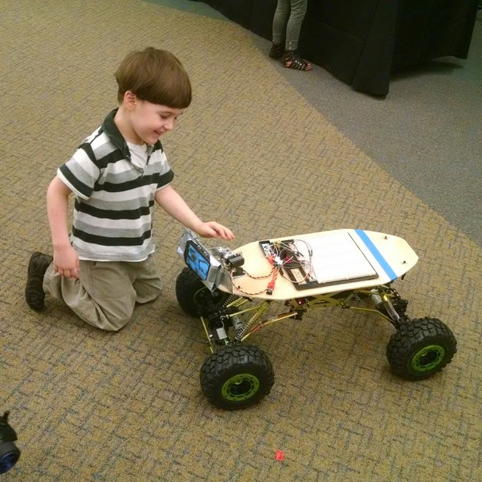

On 18 June, we went to the J. Erik Jonsson Library to inspire children to hopefully go into STEM-related careers. We were invited for their annual City of Learning event. We talked to about 200 people about robotics and most loved it - especially children. We showed them Minion, Argos, the ball-flipper, and Geb (the new name for our FTC bot).

We presented alongside a kids' robotics sponsor and Polyprinter.We got a good amount of people and got a good amount of kids interested in our robots. It was fun to talk with the other vendors at the fair, interested parents, and hobbyists.